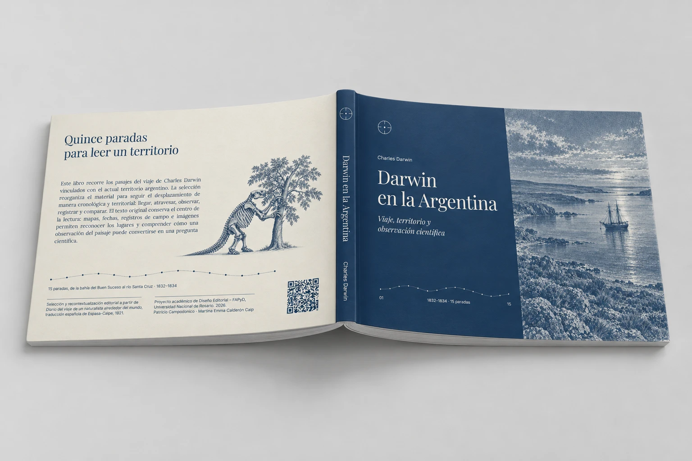

Una relectura editorial del recorrido de Charles Darwin por la Argentina.
Darwin en la Argentina es una propuesta de recontextualización editorial basada en el Diario del viaje de un naturalista alrededor del mundo de Charles Darwin. El proyecto toma el tramo correspondiente a su recorrido por el actual territorio argentino y lo reorganiza en una experiencia visual, educativa y multiplataforma.
EL OBJETIVO
El proyecto busca acercar el diario de Darwin a estudiantes de nivel secundario mediante una lectura más accesible, visual y exploratoria, sin perder el vínculo con el texto original.
En lugar de reproducir el libro de forma lineal, la información se reorganiza a partir del recorrido, los lugares, las especies, los fósiles y las observaciones registradas durante el viaje.
UN SISTEMA, TRES FORMAS DE LEER
El proyecto se construye como un sistema editorial híbrido compuesto por tres piezas complementarias. Cada una propone una forma de lectura diferente del mismo contenido.
PIEZA 01
FASCÍCULO IMPRESO
Publicación apaisada que desarrolla el recorrido de Darwin mediante una lectura secuencial e inmersiva. Combina fragmentos del diario, registros de flora y fauna, mapas, citas y anotaciones.
Formato
A5 apaisado · 210 × 148 mm
Lectura
secuencial / inmersiva

PIEZA 02
MAPA DIGITAL INTERACTIVO
Experiencia digital centrada en el territorio. Permite recorrer las distintas paradas del viaje y acceder a fragmentos del diario, lugares, especies y hallazgos a partir de la navegación por el mapa.
Formato
interfaz digital
Lectura
exploratoria / hipermedial
PIEZA 03
FICHAS DE CAMPO
Sistema de tarjetas que reúne observaciones puntuales realizadas por Darwin. Cada ficha presenta una especie, fósil, paisaje o hallazgo mediante imagen, fragmento del diario y datos de registro.
Formato
A7 · 7,4 × 10,5 cm
Lectura
fragmentada
FUENTE ORIGINAL
Charles Darwin
Diario del viaje de un naturalista alrededor del mundo
Edición española · Espasa-Calpe · 1921
La publicación original es un extenso relato de viaje organizado como texto continuo. Para este proyecto se trabaja con el fragmento correspondiente al recorrido de Darwin por la Argentina.
CRITERIO EDITORIAL
La propuesta no busca reproducir fielmente la publicación original ni construir una reedición nostálgica. El contenido se recontextualiza para un nuevo público y se reorganiza mediante una nueva arquitectura de información.
El recorrido geográfico funciona como eje principal, mientras que las observaciones de Darwin se distribuyen en distintas capas de lectura: relato, territorio, fauna, flora, fósiles y registros de campo.
RECORRIDO + OBSERVACIÓN + IMAGEN + REGISTRO
PÚBLICO
Estudiantes de nivel secundario.
La propuesta busca transformar un texto extenso y denso en una experiencia de divulgación científica más accesible y atractiva, manteniendo el rigor del material original.
CRÉDITOS
Proyecto académico desarrollado en el marco de Diseño Editorial.
Facultad de Arquitectura, Planeamiento y Diseño — Universidad Nacional de Rosario